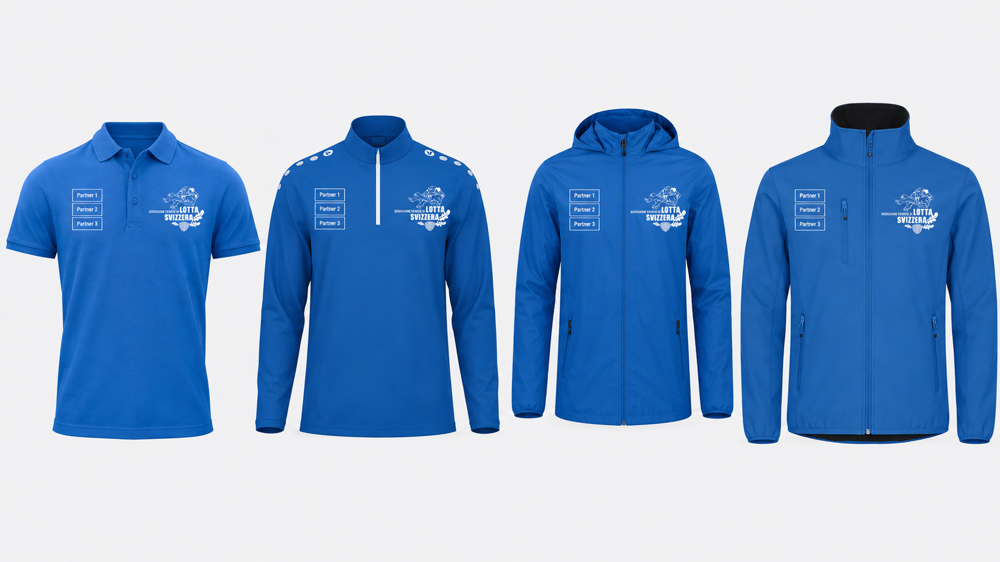

Un punto di riferimento stabile entro il 2030.
Vogliamo rendere la lotta svizzera più conosciuta, accessibile e riconoscibile in Ticino, con un locale adeguato, un gruppo sportivo attivo e un'attività di diffusione professionale.
Concetto Partner
Una proposta per aziende e partner che vogliono accompagnare la crescita della lotta svizzera in Ticino: giovani, territorio, eventi, diffusione e un nuovo locale alla CMFG Arena.
Associazione
L'ATLS è l'associazione che rappresenta la lotta svizzera nel Canton Ticino. È membro dell'Associazione di lotta svizzera della Svizzera centrale (ISV) e dell'Associazione federale di lotta svizzera (ESV).
Lo scopo dell'ATLS è la cura, la promozione e la diffusione della lotta svizzera, contribuendo così a conservare gli usi e costumi popolari della Svizzera e del Ticino.
Vogliamo rendere la lotta svizzera più conosciuta, accessibile e riconoscibile in Ticino, con un locale adeguato, un gruppo sportivo attivo e un'attività di diffusione professionale.
Allenamenti, dimostrazioni, feste, attivita con scuole e aziende: ATLS crea esperienze in cui forza, tecnica e fair play diventano educazione concreta.
Valori che guidano il nostro sport: fedeltà alle radici svizzere, lealtà nella segatura e collaborazione fuori dal campo. Avversari durante la lotta, ma parte della stessa grande famiglia in tutta la Svizzera.
Da una prova a un movimento
Da una prova a un movimento.
Nata da una passione condivisa, ATLS è cresciuta passo dopo passo, dagli allenamenti estivi al CST Tenero alle grandi feste cantonali. Un percorso fatto di impegno, persone e valori che continuano a unire generazioni di lottatori.


In estate gli allenamenti si svolgevano al CST in un campo esterno adatto. In inverno non c'erano condizioni adeguate e ci si allenava in garage piccoli e non riscaldati.

Il 13 agosto 2012 viene fondata l'Associazione Ticinese Lotta Svizzera. Nello stesso anno Edi Ritter viene nominato presidente.
Durante questi anni ATLS organizza diverse piccole gare e attivita, rafforzando la presenza della lotta svizzera sul territorio. La crescita continua con costanza e passione.
Nel 2022 si svolge la prima Festa Cantonale Ticinese. Edi Ritter guida l'associazione fino a questo traguardo e a fine 2022 lascia il testimone a Loris Di Pietro.
Nel 2025 ATLS organizza la seconda Festa Cantonale a Biasca, confermando la crescita del movimento e la sua importanza nel panorama della lotta svizzera in Ticino.

Custodi di una tradizione viva. Lo sguardo al futuro.
Nuovo progetto
Il prossimo salto di qualita e il nuovo locale di lotta alla CMFG Arena. Non solo un campo di segatura, ma un luogo riconoscibile per allenamenti regolari, presentazioni sponsor, corsi aziendali, dimostrazioni, contenuti social e incontri con la comunita.
La CMFG Arena e perfetta per lo sviluppo della lotta svizzera perche e un centro polisportivo moderno, con palestra, ristorazione, sale per eventi e riunioni, parcheggi e spazi pensati per sport, formazione e socialita. Per uno sport ancora giovane in Ticino, avere una casa chiara significa rendere piu semplice invitare ragazzi, famiglie, aziende, media e partner.
Continuita per attivi e giovani, con spazio dedicato e identita ATLS visibile.
Esperienze di team building e introduzioni alla lotta svizzera per partner e collaboratori.
Contenuti foto/video, menzioni sponsor e storytelling piu costante durante l'anno.


Dove siamo
Il segnaposto rende immediata la visita: un partner capisce subito dove nasce il progetto, dove si potranno organizzare incontri e dove sara visibile il suo sostegno.
Associazione in numeri
Dati indicativi da rapporto annuale e materiali ATLS. I numeri possono essere aggiornati prima dell'invio ufficiale ai partner.
Comitato
Il comitato unisce esperienza sportiva, competenze associative e profili professionali diversi al servizio della crescita dell'ATLS.

Ex lottatore dell'ATLS, ha assunto la guida dell'associazione nel 2022. Rappresenta il Ticino nel comitato centrale dell'ISV ed è attivo anche come arbitro. Attualmente sta inoltre completando la formazione per diventare esperto G+S per la Svizzera centrale.
Nella vita professionale sta conseguendo un Master in economia presso l'Università di Zurigo.

Padre di un giovane lottatore e da anni vicino alla lotta svizzera, dal 2025 sostiene il giovane comitato ATLS portando la sua esperienza maturata in diverse associazioni sportive.
Professionalmente è responsabile della filiale PROBST MAVEG di Osogna ed è inoltre membro del comitato cantonale UPSA.
Membra del comitato di fondazione dell'ATLS nel 2012, ricopre sin dagli inizi il ruolo di segretaria e cassiera. È un importante punto di riferimento per i membri e per l'organizzazione amministrativa dell'associazione.
Professionalmente è impiegata di commercio qualificata.

Responsabile degli allenamenti, della partecipazione alle gare in tutta la Svizzera e rappresentante del Ticino nei comitati tecnici della Svizzera centrale. È tuttora attivo come lottatore.
Professionalmente è falegname qualificato e sta concludendo il Bachelor in ingegneria del legno.

Ex lottatore, oggi è portabandiera ufficiale dell'ATLS e membro del comitato. Contribuisce alla rappresentanza dell'associazione in occasione di eventi, feste e momenti ufficiali.
Ha conseguito una formazione in economia presso l'HSG ed è attualmente attivo nel private banking.

Responsabile dello sviluppo strategico e delle collaborazioni con i partner del territorio, si occupa di creare nuove opportunità e relazioni a sostegno della crescita e della promozione della lotta svizzera in Ticino.
Nella vita professionale è Team Manager del Data Management presso Infront, azienda fintech, ed è fondatore della Mangrove Academy, accademia sportiva dedicata allo sviluppo personale attraverso il Jiu-Jitsu.

La proposta ATLS
Quattro forme di collaborazione, dalla presenza sui capi ufficiali al sostegno locale, pensate per costruire rapporti di fiducia e duraturi.
Cerchiamo partner con una forte identità svizzera e territoriale, pronti a costruire con l'ATLS le basi per consolidare la lotta svizzera in Ticino. Una collaborazione che rafforza la nostra presenza e valorizza le aziende che condividono questo percorso.
Partner da gara
Da CHF 5’000/ anno
3 slot disponibili
La presenza più riconoscibile dell'ATLS, pensata per tre partner che ci rappresentano anche sui capi ufficiali.

Uno spazio logo indicativo di 30 cm² per ciascuno dei tre partner su giacca d'allenamento, softshell e polo ufficiale ATLS. I capi vengono indossati da lottatori, funzionari e membri del comitato durante le attività e gli appuntamenti associativi.
Esclusività nella categoria professionale concordata, senza la presenza di concorrenti diretti nello stesso livello di partnership.
Logo, collegamento e descrizione aziendale in posizione prioritaria nella futura sezione partner del sito ATLS.
Logo sui materiali dedicati alla divulgazione della lotta svizzera, alle giornate di prova e alle attività ATLS.
Menzione del partner nei contenuti che raccontano risultati, trasferte e momenti significativi della stagione sportiva.
Un contenuto dedicato per raccontare il legame tra il partner, i valori condivisi e lo sviluppo della lotta svizzera in Ticino.
Stories dedicate o condivise durante allenamenti, gare, eventi e attività concordate con il partner.
Invito all'Assemblea generale e agli eventuali eventi organizzati da ATLS, secondo disponibilità e modalità dell'appuntamento.
Utilizzo concordato di immagini ATLS per la comunicazione aziendale, ad esempio sul sito, sui social media o nelle newsletter.
Presenza visiva premium nel nuovo locale di lotta, con posizione e formato da concordare insieme al partner.
Accesso prioritario alle opportunità disponibili per eventi selezionati, feste di lotta e momenti esclusivi.
Main Partner
Da CHF 5’000/ anno
Massima visibilità
Insieme affermiamo la lotta svizzera in Ticino e ne trasmettiamo i valori alle nuove generazioni.
Esclusività nella categoria professionale concordata, senza la presenza di concorrenti diretti nello stesso livello di partnership.
Logo, collegamento e descrizione aziendale in posizione prioritaria nella futura sezione partner del sito ATLS.
Logo sui materiali dedicati alla divulgazione della lotta svizzera, alle giornate di prova e alle attività ATLS.
Menzione del partner nei contenuti che raccontano risultati, trasferte e momenti significativi della stagione sportiva.
Un contenuto dedicato per raccontare il legame tra il partner, i valori condivisi e lo sviluppo della lotta svizzera in Ticino.
Stories dedicate o condivise durante allenamenti, gare, eventi e attività concordate con il partner.
Invito all'Assemblea generale e agli eventuali eventi organizzati da ATLS, secondo disponibilità e modalità dell'appuntamento.
Utilizzo concordato di immagini ATLS per la comunicazione aziendale, ad esempio sul sito, sui social media o nelle newsletter.
Presenza visiva premium nel nuovo locale di lotta, con posizione e formato da concordare insieme al partner.
Accesso prioritario alle opportunità disponibili per eventi selezionati, feste di lotta e momenti esclusivi.
Partner collaborazione
Da CHF 2’000/ anno
Collaborazione
Rappresenta la tua categoria in Ticino e collabora allo sviluppo dello sport e del territorio.
Esclusività nella categoria professionale concordata, senza la presenza di concorrenti diretti nello stesso livello di partnership.
Logo, collegamento e breve descrizione nella futura sezione partner del sito ATLS.
Logo sui materiali dedicati alla divulgazione della lotta svizzera, alle giornate di prova e alle attività ATLS.
Menzione del partner nei contenuti che raccontano risultati, trasferte e momenti significativi della stagione sportiva.
Stories dedicate o condivise durante allenamenti, gare, eventi e attività concordate con il partner.
Invito all'Assemblea generale e agli eventuali eventi organizzati da ATLS, secondo disponibilità e modalità dell'appuntamento.
Utilizzo concordato di immagini ATLS per la comunicazione aziendale, ad esempio sul sito, sui social media o nelle newsletter.
Presenza visiva nel nuovo locale di lotta, con posizione e formato da concordare insieme al partner.
Aziende, istituzioni e associazioni sostenitrici
Da CHF 500/ anno
Sostegno
Sostieni la lotta svizzera in Ticino e la comunità locale.
Presenza nella futura pagina sostenitori ATLS con il nome o il logo dell'azienda, dell'istituzione o dell'associazione.
Ringraziamento annuale insieme agli altri sostenitori attraverso i canali di comunicazione ATLS.
Possibilità di usare una foto ufficiale ATLS concordata per comunicare il sostegno alla lotta svizzera in Ticino.
Invito all'Assemblea generale e agli eventuali eventi organizzati da ATLS, secondo disponibilità e modalità dell'appuntamento.
Documentazione contabile. Per ogni sostegno ATLS rilascia un documento adeguato alla forma di collaborazione: fattura o conferma per le prestazioni di sponsoring, ricevuta per i contributi liberali. L'eventuale deducibilità fiscale dipende dalla situazione del partner e dalla normativa applicabile e deve essere verificata con la propria fiduciaria.
Valore per il Partner
Insieme ai nostri partner vogliamo trasmettere e rafforzare l'identità svizzera e consolidare la presenza della lotta svizzera nella realtà ticinese. Cerchiamo aziende con una forte identità territoriale: partner capaci di rafforzare l'immagine ATLS e, allo stesso tempo, di valorizzare la propria immagine attraverso uno sport autentico, riconoscibile e profondamente svizzero.
La presenza ATLS cresce attraverso l'attività sportiva regolare e il contatto continuo con il mondo della lotta svizzera.
ATLS organizza appuntamenti capaci di riunire sport, tradizione, pubblico e aziende attorno alla lotta svizzera.
Portiamo la lotta svizzera tra le persone, creando occasioni di incontro diretto con il pubblico ticinese.
Costruiamo il prossimo passo
Ogni collaborazione nasce da obiettivi condivisi. Contattateci per conoscere ATLS e visitare la nuova base di Sigirino.